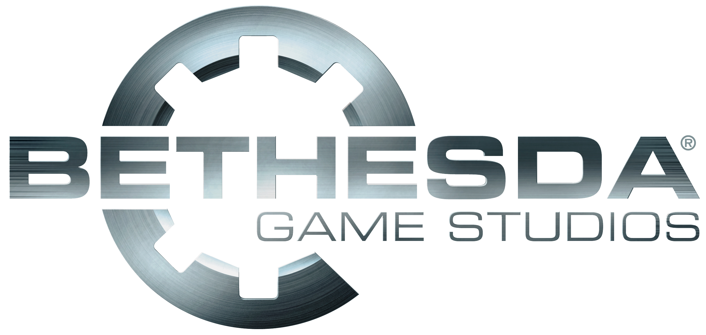

What is The Elder Scrolls?
 The Elder Scrolls is a series of action role-playing video games primarily developed by Bethesda Game Studios and published by Bethesda Softworks. The series focuses on free-form gameplay in a detailed open world. Morrowind, Oblivion and Skyrim all won Game of the Year awards from multiple outlets. The series has sold more than 58 million copies worldwide.
Within the series' fictional universe, each game takes place on the continent of Tamriel. The setting combines pre-medieval real-world elements, such as a powerful Roman-like Empire, with high fantasy medieval tropes, including limited technology, widespread magic use, and the existence of many mythological creatures. The continent is split into a number of provinces inhabited by humans and popular humanoid fantasy races such as elves, orcs and anthropomorphic animals. A common theme in the lore is that a chosen hero rises to defeat an incoming threat, usually a malevolent being or an antagonistic army.
Since debuting with Arena in 1994, the series has produced a total of five main games (of which the last three have each featured two or three expansions) as well as several spin-offs. In 2014, a massively multiplayer online role-playing game, The Elder Scrolls Online, was released by Bethesda's affiliated ZeniMax subsidiary ZeniMax Online Studios.
The Elder Scrolls is a series of action role-playing video games primarily developed by Bethesda Game Studios and published by Bethesda Softworks. The series focuses on free-form gameplay in a detailed open world. Morrowind, Oblivion and Skyrim all won Game of the Year awards from multiple outlets. The series has sold more than 58 million copies worldwide.
Within the series' fictional universe, each game takes place on the continent of Tamriel. The setting combines pre-medieval real-world elements, such as a powerful Roman-like Empire, with high fantasy medieval tropes, including limited technology, widespread magic use, and the existence of many mythological creatures. The continent is split into a number of provinces inhabited by humans and popular humanoid fantasy races such as elves, orcs and anthropomorphic animals. A common theme in the lore is that a chosen hero rises to defeat an incoming threat, usually a malevolent being or an antagonistic army.
Since debuting with Arena in 1994, the series has produced a total of five main games (of which the last three have each featured two or three expansions) as well as several spin-offs. In 2014, a massively multiplayer online role-playing game, The Elder Scrolls Online, was released by Bethesda's affiliated ZeniMax subsidiary ZeniMax Online Studios.
Bethesda

The Elder Scrolls gmes are developed by Bethesda Game Studios and released under Bethesda Softworks.
Bethesda Game Studios is an American video game developer and a studio of ZeniMax Media based in Rockville, Maryland. The company was established in 2001 as the spin-off of Bethesda Softworks' development unit, with Bethesda Softworks itself retaining a publishing function. The studio is led by Todd Howard as executive producer and Ashley Cheng as studio director. Bethesda Game Studios operates three satellite studios, one in Montreal and two in Texas, and employs 420 people as of March 2021.
In 2001, ZeniMax Media, the parent company of Bethesda Softworks, decided that the two operational units at Bethesda Softworks, development and publishing, should be split apart. Subsequently, Bethesda Softworks retained the publishing, while development staff was moved to the newly established Bethesda Game Studios. Initially, BGS had around 40 people.
By 2008, Bethesda Game Studios was considered one of the industry’s top developers on the reputation of the Elder Scrolls fantasy universe and the critically acclaimed Fallout 3. Bethesda had created a unique role for itself, “spending years to create massive, open-world, single-player RPGs — hardly a booming genre in the industry at large — to great success, bringing a once-niche PC genre to a broad multiplatform audience,” wrote Gamasutra in their year-end best of list.
On December 9, 2015, ZeniMax Media announced the formation of Bethesda Game Studios Montreal, a new Bethesda Game Studios location in Montreal, Quebec. Led by Yves Lachance, the former head of Behaviour Interactive, the studio was set to broaden the portfolio of games across all gaming platforms.
On March 9, 2018, Austin, Texas-based BattleCry Studios, another ZeniMax Media subsidiary, was rebranded as Bethesda Game Studios Austin.
On August 10, 2018, Escalation Studios was rebranded as Bethesda Game Studios Dallas.
ZeniMax Media was acquired by Microsoft for US$7.5 billion in March 2021 and became part of Xbox Game Studios.
Todd Howard
 Todd Andrew Howard (born 1970) is an American video game designer, director, and producer. He serves as director and executive producer at Bethesda Game Studios, where he has led the development of the Fallout and The Elder Scrolls series.
Bethesda Softworks eventually recruited Howard in 1994 as a producer. His first game development credit for Bethesda was as the producer and designer of The Terminator: Future Shock (1995), followed by work as a designer on Skynet and The Elder Scrolls II: Daggerfall, both released in 1996. He was project leader for the first time on The Elder Scrolls Adventures: Redguard, released in 1998.
In 2000, Howard was appointed project leader and designer for The Elder Scrolls III: Morrowind and the expansions that followed. The game was released in 2002 and was a critical and commercial success, winning several Game of the Year awards. He then led the creation of The Elder Scrolls IV: Oblivion (2006) as its executive producer. After this, he served as game director and executive producer of Fallout 3, released in 2008.
Howard returned to The Elder Scrolls series to lead the development as the creative director of its fifth installment, The Elder Scrolls V: Skyrim, which was released in November 2011. He subsequently directed Fallout 4, released in November 2015, and Fallout 76, a multiplayer installment in the series that attracted criticism upon its release in November 2018. Howard will also serve as the executive producer of the upcoming game based on the Indiana Jones series of films, currently in development by MachineGames and Lucasfilm Games.
Todd Andrew Howard (born 1970) is an American video game designer, director, and producer. He serves as director and executive producer at Bethesda Game Studios, where he has led the development of the Fallout and The Elder Scrolls series.
Bethesda Softworks eventually recruited Howard in 1994 as a producer. His first game development credit for Bethesda was as the producer and designer of The Terminator: Future Shock (1995), followed by work as a designer on Skynet and The Elder Scrolls II: Daggerfall, both released in 1996. He was project leader for the first time on The Elder Scrolls Adventures: Redguard, released in 1998.
In 2000, Howard was appointed project leader and designer for The Elder Scrolls III: Morrowind and the expansions that followed. The game was released in 2002 and was a critical and commercial success, winning several Game of the Year awards. He then led the creation of The Elder Scrolls IV: Oblivion (2006) as its executive producer. After this, he served as game director and executive producer of Fallout 3, released in 2008.
Howard returned to The Elder Scrolls series to lead the development as the creative director of its fifth installment, The Elder Scrolls V: Skyrim, which was released in November 2011. He subsequently directed Fallout 4, released in November 2015, and Fallout 76, a multiplayer installment in the series that attracted criticism upon its release in November 2018. Howard will also serve as the executive producer of the upcoming game based on the Indiana Jones series of films, currently in development by MachineGames and Lucasfilm Games.